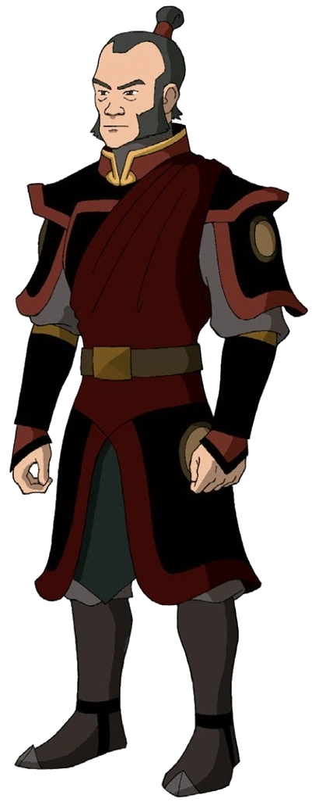

Zhao
Fire Nation
Zhao was the leader of the Fire Nation Navy for a brief period in early 100 AG. During his career, he held the ranks of lieutenant, captain, commander, and finally admiral. He was trained by Jeong Jeong to become a master firebender and, as one of the most powerful men in the Fire Nation, took it upon himself to capture Avatar Aang, thus becoming a rival of Prince Zuko. Zhao was a major enemy of Team Avatar in most of the events leading up to his siege of the Northern Water Tribe, during which he killed the Moon Spirit at the Spirit Oasis. This resulted in his downfall by a vengeful Ocean Spirit, who subsequently condemned Zhao to spend eternity in the Fog of Lost Souls in the Spirit World.
